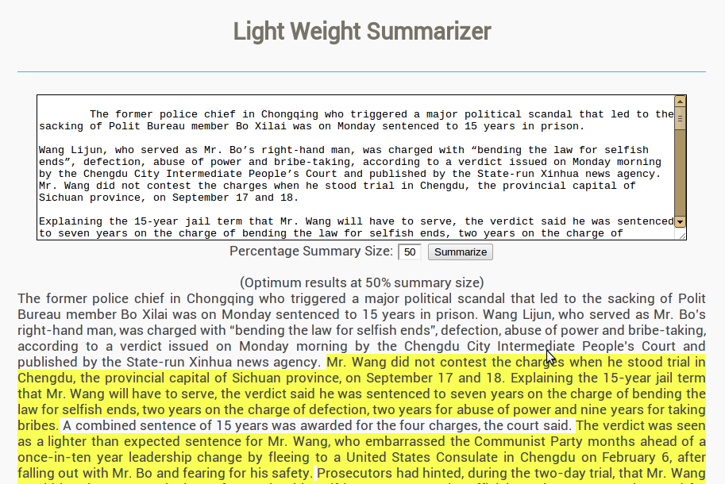
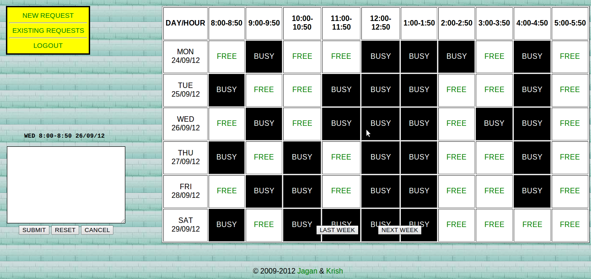

- Argumentation extraction
Advisor: Prof. Iryna Gurevych and Christian Stab, UKP Lab, Darmstadt University of Technology, Darmstadt, Germany - Classification of Wikipedia Edits in English and German
Advisor: Prof. Iryna Gurevych and Johannes Daxenberger, UKP Lab, Darmstadt University of Technology, Darmstadt, Germany - Workload Characterization Using Trace Segmentation
Mentor: Mr. Jayanta Basak, Member Technical Staff, NetApp Inc., Bangalore, India - Language Independent Sentence Extraction Based Text Summarization
Mentor: Prof. B. B. Chaudhuri, Head, Computer Vision and Pattern Recognition Unit, Indian Statistical Institute, Kolkata - Test Data Generation: A Hybrid Approach Using Cuckoo and Tabu Search
Mentor: Mr. Praveen Ranjan Srivastava, Lecturer, Department of Computer Science and Information Systems, BITS-Pilani - Edu-Connect
Partner: Jagan Mohan Ungati
Research and development of a tool for automatic mining and extraction of argumentation in student essays.
Implementation of a supervised classification pipeline that automatically categorizes edits in Wikipedia into one of 21 categories like spelling/grammar, paraphrase, markup-insert, information-modification, etc. Implemented on DKPro-TC, an open source framework for supervised text classification.
This project introduced a machine learning-based black box model to capture storage workload characteristics. Time series segmentation and Markov chain modeling were used to implement the same (coded in Octave). The project idea and implementation are the property of NetApp India Pvt Ltd.
This project introduced a highly efficient language independent approach for the automated summarization of single documents based on sentence extraction. The proposed approach involves the use of a structural characteristics based sentence scoring along with a PageRank based sentence ranking. It is expected to work equally well for all languages. The effectiveness of the proposed approach has been confirmed for English and Tamil documents by applying the ROUGE evaluation. The results for English were compiled using DUC 2002 data on single document summarization, whereas those for Tamil were compiled using a set of 100 human written summaries. The ROUGE-1 score of 0.52 for DUC 2002 shows a drastic improvement over other existing text summarization systems for English. The paper was presented at the International Conference on Natural Language Processing 2011. [PDF] [Demo]

This project introduced a novel approach to automated test data generation for software programs using a combination of heuristics involving Cuckoo and Tabu Search. The experimental results have shown a high degree of improvement with respect to the conventional Genetic Algorithm based technique. A paper on this work was presented at the Conference on Swarm, Evolutionary and Memetic Computing 2011 at Vishakhapatnam, India. [Paper] [Presentation]
A web application using WAMP (Windows, Apache, MySQL, PHP) to enable professor-student interaction at educational institutions with features like appointment management and automated SMS notifications. [Demo] (beta version with limited functionalities)
